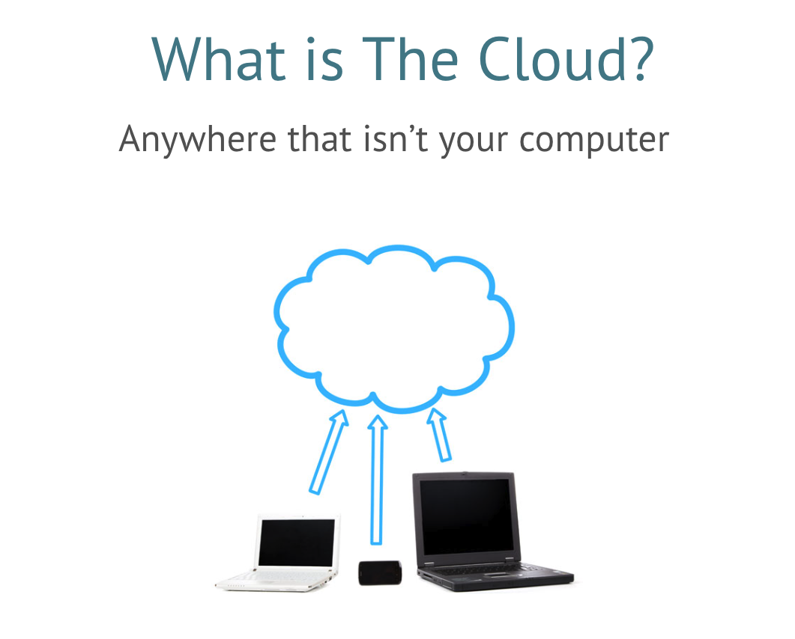
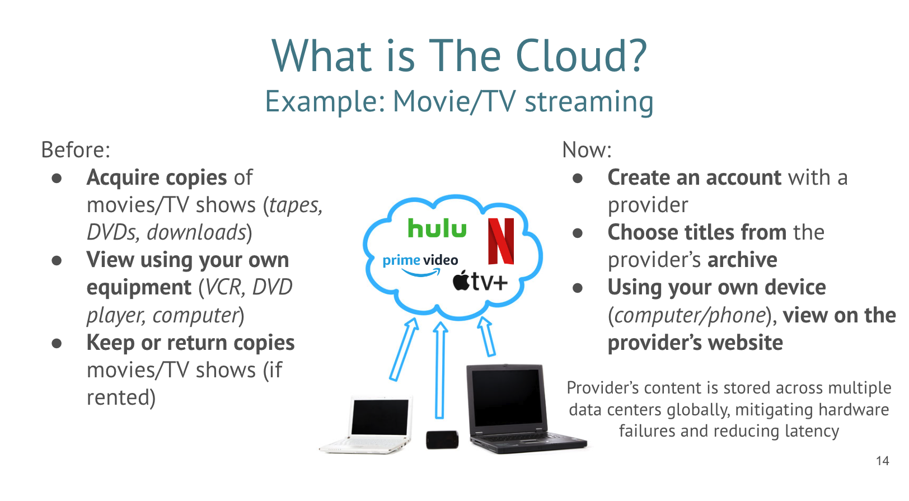
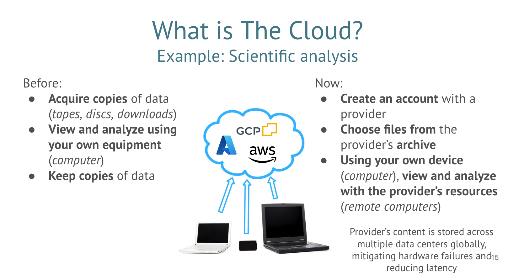
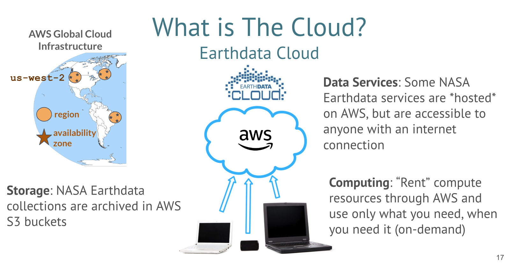

When To ‘Cloud’
Is in-cloud access and analysis for you?
Cloud adoption often has a steep learning curve and can feel overwhelming. There are times when using the cloud is effective and times when the download model is more appropriate. Here we aim to help you decide what’s best for your use case.
What does it mean to be in The Cloud?

At a basic level, “The Cloud” is somewhere that isn’t your computer. We all interact with data and services and that live in “The Cloud” in our daily lives. When we store photos in iCloud or Google accounts instead of on our cell phones, we are using cloud storage. When we watch movies and tv shows on streaming services like Netflix or Hulu, we are using the cloud. In these cases, we are interacting with “the cloud” without knowing it, though we, the user, are not in “the cloud”.

If you use services like computing and storage, provided by a cloud service provider (Amazon Web Services, Microsoft Azure, Google Cloud Platform, etc.), then you are in “the cloud”. Remember, “the cloud” is somewhere that isn’t your computer. The storage location is elsewhere and the machines and processing is elsewhere.

The following guidance is specific to NASA Earthdata and the particular cloud it is stored in, Amazon Web Services (AWS). While some services provided by NASA data archives are cloud-based and you interact with, the guidance below refers to using compute and storage services provided by AWS that allow a user to work closely, or in the same cloud, as the data.

Questions to ask yourself
Use the following questions to guide your decisionmaking process about using cloud access and computing:
- What is the data volume?
- How long will it take to download?
- Can you store all that data (cost and space)?
- Do you have the computing power for processing?
- Does your team need a common computing environment?
- Do you need to share data at each step or just an end product?
- Is the action I want to take an existing service? (i.e. subsetting a dataset)
Source: Data strategies for Future Us by Andy Barrett
To Cloud…
TODO: list example cases here: identify and describe what makes cloud usage more benficial for the team/workflow
Find more discussion on cloud-based solutions for geoscience in this Medium article by Ryan Abernathy and Joe Hamman.
Not To Cloud…
TODO: list examples cases here: identify and describe what makes the non-option more beneficial for the team/workflow
Challenges
It is important to be aware of the drawbacks and challenges associated with working in the cloud. Feedback from early cloud adopters are summarized here:
- “I don’t have the time or energy to learn so many new concepts.”
- “Major challenge: budgeting for cloud in a proposal.”
- “My workflow isn’t parallelizable, the file format isn’t cloud-optimized, I’d rather download everything I need and perform analysis locally.”
- “[On the preference to perform analysis locally] …this is fine if data wasn’t getting bigger!”
- “[The cloud] is faster, but only by a factor of 2. Our setup and data granules aren’t structured to take advantage of a faster cloud.”
- “Worried about doing things ‘on my own’, outside of a cloud-hosted JupyterHub.”
- “How does using data from AWS work with GEE?”
Source: The Cloud: Obstacles and Barriers Encountered by Users (AGU 2023 - Alexis Hunzinger, Christopher Battisto, Allison Alcott, Binita KC)
Considerations
We are now accustomed to living in a highly digital world, separated from physical reminders of the technology we use. No longer do we access documents from a row of filing cabinets, we now store them in cloud-based archives (e.g. Google Docs). We run code on high-performance computing clusters, removed from the whirring and warmth generated by servers that live away from our desks. The following are considerations for using powerful cloud-based resources:
- Removed from physical signs of energy usage (heat, noise) of supercomputers/servers
- Physical location of “the cloud”, whose land is it on? What resources is it using?
- Environmental impacts of large server farms
- Consider testing locally before migrating a workflow to the cloud
Does cloud storage and computing increase fairness?
- Yes! Cloud is a solution for improving fairness, as it provides under-resourced organizations (e.g. small universities, international groups) access to equipment they don’t own or maintain.
- No! Larger organizations, who already own and maintain equipment for storage and computing, often have the budget to also use cloud storage and computing. This increases their pool of resources, giving them a larger advantage.